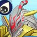
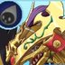

- 세대
- 궁극체
- 종족
 데이터
데이터- 속성
- 불
- 소비 메모리
- 18
- 장비 슬롯
- 2
스테이터스 (Lv.99)
HP192057위/98
SP14878위/98
ATK23735위/98
INT15071위/98
DEF22220위/98
SPD18670위/98
막대 길이는 등록된 디지몬 중 최고값 대비 비율이에요. 순위는 스테이터스가 등록된 디지몬끼리 비교해요.
필살기 1
볼케닉 드라이버 불 SP 20
적 1체물리위력 130
디지몬 속성과 같음
적 1체에 불속성 위력 130의 물리공격. 크리티컬이 발생하기 쉽다.
상성별 데미지 배율 상대 종족(세로) · 속성(가로)상대 속성(세로) · 종족(가로)
×3 이상×2 이상보통×1 미만
| 상대 ↓ / → | 불 | ||||||||
|---|---|---|---|---|---|---|---|---|---|
| 백신 | ×2.00 | ×2.00 | ×3.00 | ×2.00 | ×2.00 | ×2.00 | ×2.00 | ×2.00 | ×2.00 |
| 데이터 | ×1.00 | ×1.00 | ×1.50 | ×1.00 | ×1.00 | ×1.00 | ×1.00 | ×1.00 | ×1.00 |
| 바이러스 | ×0.50 | ×0.50 | ×0.75 | ×0.50 | ×0.50 | ×0.50 | ×0.50 | ×0.50 | ×0.50 |
| 프리 | ×1.00 | ×1.00 | ×1.50 | ×1.00 | ×1.00 | ×1.00 | ×1.00 | ×1.00 | ×1.00 |
| 불 | ×2.00 | ×1.00 | ×0.50 | ×1.00 |
|---|---|---|---|---|
| ×2.00 | ×1.00 | ×0.50 | ×1.00 | |
| ×3.00 | ×1.50 | ×0.75 | ×1.50 | |
| ×2.00 | ×1.00 | ×0.50 | ×1.00 | |
| ×2.00 | ×1.00 | ×0.50 | ×1.00 | |
| ×2.00 | ×1.00 | ×0.50 | ×1.00 | |
| ×2.00 | ×1.00 | ×0.50 | ×1.00 | |
| ×2.00 | ×1.00 | ×0.50 | ×1.00 | |
| ×2.00 | ×1.00 | ×0.50 | ×1.00 |
배율 칸을 누르면 계산식이 여기에 나와요.
SS(서포트스킬)
완전 방어
회피율이 크게 떨어지는 대신 받는 대미지를 15% 경감한다.
계승기 (레벨업 습득) 5
이 디지몬이 레벨업으로 배우는 스킬이에요. 배운 스킬은 진화·퇴화해도 계속 쓸 수 있어요.
| 습득 Lv | 스킬 | 속성 | SP |
|---|---|---|---|
| 20 | 마하 러시 II 적 전체에 무속성 위력 50의 물리공격. 필중. | 7 | |
| 35 | 볼케 네이팜 III 적 1체에 불속성 위력 105의 물리공격. 명중률 95%. | 불 | 9 |
| 50 | 크로스 카운터 물리공격을 받았을 때, 반격 태세에 들어간다. | 6 | |
| 65 | 메테오 폴 II 적 전체에 불속성 위력 45의 물리공격. 명중률 95%. | 불 | 7 |
| 80 | 마하 러시 III 적 전체에 무속성 위력 80의 물리공격. 필중. | 10 |
이 디지몬이 강한 상대 97펼쳐 보기
등록된 디지몬 중 필살기로 ×2 이상 데미지를 줄 수 있는 상대예요. 세대를 누르면 그 세대 목록이 보여요.
궁극체 같은 세대 29 · 다른 세대 상대는 도감에서 볼 수 있어요.

갓드라몬×2.00
오류우몬×2.00오메가몬NX×2.00진화 가능 디지몬
더 이상 진화할 수 없어요.
진화 트리 · 파일볼케몬까지 오는 길
왼쪽부터 진화 순서예요. 선은 출발하는 디지몬의 색을 따라가요. 디지몬을 한 번 누르면 거기서 파일볼케몬까지 가는 경로만 남고, 한 번 더 누르면 그 디지몬 페이지로 이동해요. 회색 칸은 아직 정보가 없는 디지몬이에요.
유년기I
유년기II
성장기
성숙기
완전체
궁극체